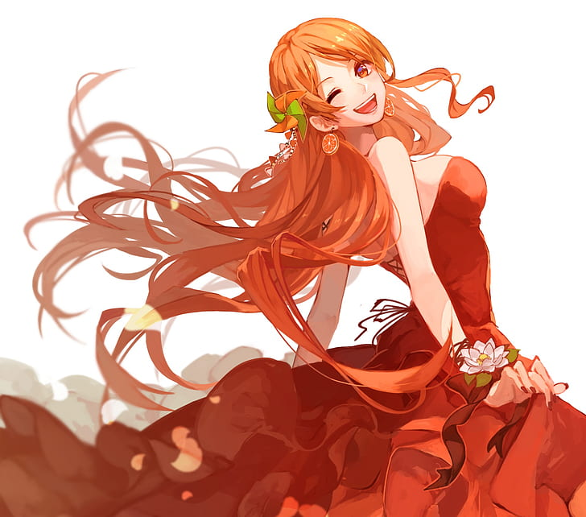
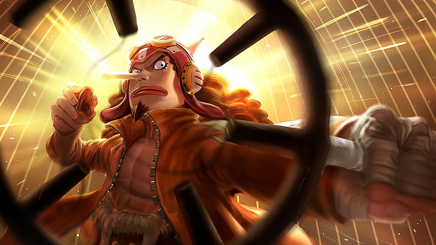
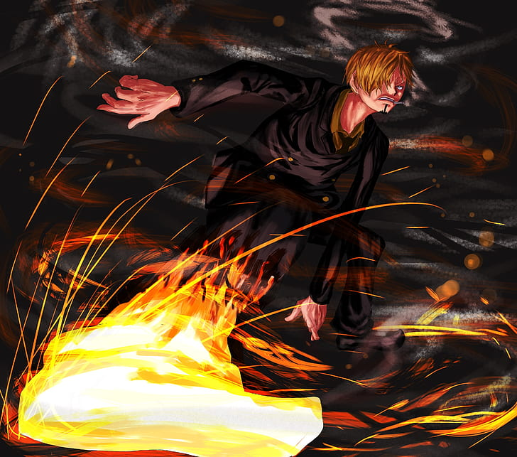
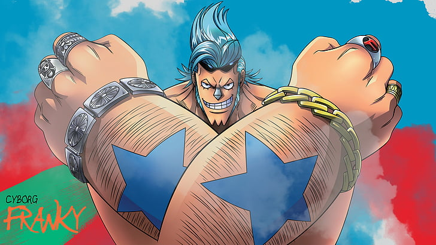
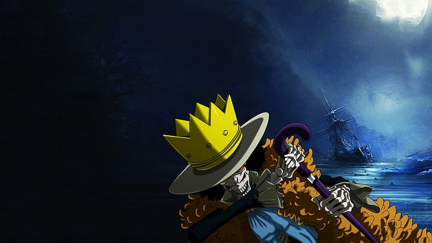
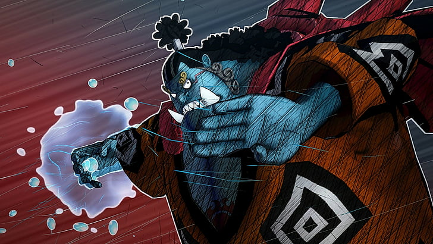

Straw Hat Pirates

“As long as you’re living, that’s enough. If you’re alive, you can fight again!"
Monkey D. Luffy

“A scar on the back is a shame for a swordsman."
Roronoa Zoro

“Life is like a pencil that will surely run out, but will leave the beautiful writing of life.”
Nami

“I am a brave warrior of the sea!”
Usopp

“I understand starving people more than anyone.”
Vinsmoke Sanji

"I'm gonna try even harder and be helpful to everyone!"
Tony Tony Chopper

“History may always be repeating itself, but humans cannot go back into the past.”
Nico Robin

"You sure are proud of your body, but it doesn't compare to mine!"
Franky

"What keeps me alive in this world is neither bodily organs, nor muscles - it's my soul!"
Brook

"Don't just think about the ones you have lost. You can't get back what have lost. What is that you still have?"
Jinbe